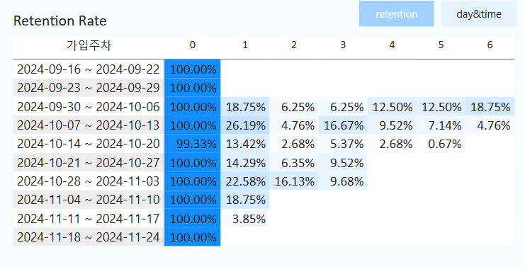

Data Analyst
장윤서 (Jang Yunseo)

인삿말 (Introduction)
데이터 분석 및 시각화, AI 모델 개발 경험을 가진 1년차 데이터 분석가입니다.
yunbongyi@gmail.com

Git Hub(정리중)
학력 (Education)
한림대학교 빅데이터 학과 | 학사
학점: 3.71/ 4.5
수강 과목: 데이터 분석, 인공지능 기초, 머신러닝, 파이썬 프로그래밍, 캡스톤 디자인, 데이터 시각화. 빅데이터 분석 등
직무 및 이력 (Experiences)
데이터 엔지니어
| 비웨이브(주)
| 비웨이브(주)
경기도 고양시 ∙ 2023.09- 2024.12
📊 데이터 분석 및 머신러닝 모델 개발
- 시계열 생체 신호 분석 (EEG, PPG)
→ 환자/정상인 분류 모델 정확도 68% → 74% 개선
- Python, Matplotlib 기반 데이터 시각화 및 통계 분석
- ANOVA 등 통계 기법 활용
→ 데이터 검증 및 변수 유의성 평가
📈 비즈니스 데이터 분석 및 시각화 (Power BI & SQL)
- Power BI 대시보드 제작 및 마케팅 지표 분석
→ Retention Rate, CRV, ARPU, LTV 등 시각화 및 인사이트 도출
- MySQL을 활용한 데이터 가공 및 분석
→ SQL로 실무 데이터 추출 및 가공 → 전략 도출 지원
보유 스킬 (Skill)
[ Hard Skill ]
Python
Power BI
GitHub
Statistics
[ Soft Skill ]
문제 해결력
기획력 및 통찰력
MySQL
R
Machine Learning
커뮤니케이션
학습 및 적응력
자격증
ADSP (2023.09.15)
SQLD (2024.06.21)
- 한국 데이터 산업 진흥원
- 한국 데이터 산업 진흥원
수상 경력
주제: 쓰레기 불법투기 분석 및 대안 제시
- 목적
춘천시 관내 불법 쓰레기투기 문제를 데이터 기반으로 분석하고, 정책 대안을 제시
- 과정
- 2018~2022년 불법투기 적발 데이터 수집 및 전처리
- 유동인구, 상권, 지가, 소득 등 외부 데이터와 결합하여 상관분석 수행
- QGIS를 활용한 밀집 지역 시각화 및 분석
- CCTV 설치, 청소 인력 재배치 등 실행 가능한 정책 제안 수립
- 결과
- 불법투기 주요 발생 요인을 데이터 기반으로 도출
- 시각자료 및 정책 제안을 통해 장려상 수상
- 추가 자료
주요 프로젝트
Power BI 대시보드 제작 및 마케팅 지표 분석 (2024.03~2024.11)
- 목적
자사 앱의 사용자 데이터를 분석하여 마케팅 인사이트를 도출하고, 이를 시각화한 대시보드를 통해 주요 지표를 효과적으로 모니터링하기 위함.
- 과정
- Power BI를 활용하여 주차별 Retention Rate, 요일 및 시간대별 사용자 활성도 등을 시각화
- MySQL을 사용하여 가입자 수, MAU, CVR 등의 지표를 날짜별로 조회할 수 있는 기능 구현
- LTV 지표를 계산하여 고객당 평균 수익 분석
- 버튼 형식과 날짜 선택 기능을 통해 대시보드의 가독성과 사용자 편의성 향상
- 결과
구축된 대시보드를 통해 마케팅 팀이 사용자 행동 패턴을 명확히 파악하고, 전략 수립에 필요한 핵심 지표들을 실시간으로 모니터링할 수 있게 됨.
결과 예시

{kind=link}
APG 데이터를 활용한 혈관 나이 예측 AI 웹 서비스 개발 (졸업 프로젝트 / 3인 팀 )
- 목적
혈관 노화 속도를 조기에 파악하고, 사용자 맞춤형 건강 관리 솔루션을 제공하는 웹 기반 AI 시스템 개발
- 과정 [AI 모델 개발 담당]
- 데이터 수 부족 문제 해결을 위해 반전, 진폭 조정, 시계열 이동, 가우시안 노이즈 추가, 정규화(MinMaxScaler) 등 다양한 전처리 및 증강 기법 시도 → 총 780건으로 확장
- Conv1D 기반 딥러닝 모델 설계: 다양한 커널 크기, BatchNormalization, Dropout 적용
- Stratified K-Fold 교차검증, EarlyStopping, Learning Rate Scheduler 사용하여 일반화 성능 확보
- 클래스 불균형 문제 대응을 위해 SMOTE 적용
- 결과 및 한계
- 최종 모델 정확도: 63.7%
- 소량의 데이터로 인한 과적합과 일반화 어려움이 주요 한계였으며, 다양한 전처리 방법을 시도했으나 데이터 양의 근본적인 부족이 예측 성능 향상의 가장 큰 장애 요인
- 추후 데이터 확보 시 성능 개선 가능성 확인
EEG/PPG 시계열 데이터 분석을 통한 환자/정상 분류 모델 개발
- 데이터 전처리: 클래스 불균형 문제 해결을 위해 가중치 조정, SMOTE, Tomek 등을 활용
- 모델 개발 전, 두 그룹 간 유의미한 차이를 확인하기 위해 정규성 검사 및 p-value 분석을 통해 적절한 feature selection 수행
- 다양한 분류 모델(SVM, Decision Tree, LightGBM, Random Forest 등)을 적용하여 성능을 68%에서 74%로 향상